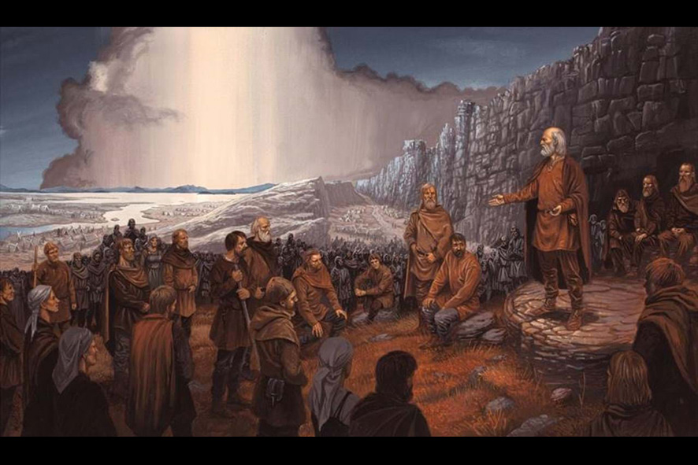

Qui sommes nous?
On a décrit les things comme le berceau viking de la démocratie car leur naissance constituait la première tentative d’introduire un système représentatif permettant de régler les différents sur une place publique neutre, de façon non-violente, plutôt que par des querelles sanglantes.
C’est tout naturellement que nous avons donc repris ce therme pour nous rassembler et parler de tous sujets qui suscite discutions.
Il y a quatre Thing par an, le premier se déroule en Mars, le second à la fête de Litha en juin, le troisième en septembre et le dernier à la fête de Yule en décembre.
Les thèmes abordés sont nettement l’avancement de la tenue des nouveaux membres, faire un point sur l’évolution des projets de l’association (artisanat, village…) et répondre à toutes les questions que peuvent se poser les membres de la troupe.
